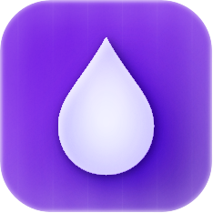

Drippi has shut down.
To the tens of thousands of founders, creators, and agencies who used Drippi to run outreach on X — thank you. Building this with you was a good run.
The product is no longer operating. The brand and its assets are available for acquisition.
What's for sale
- drippi.ai domain
- Aged, brandable .ai domain with existing backlinks and blog content ranking for X/Twitter DM and outreach keywords.
- Customer database
- Tens of thousands of opted-in signups and paying customers in the X outreach niche. Transferred compliantly as part of an asset sale.
- X user database
- ~300M account dataset that powered Drippi's lead discovery and filtering.
- Product codebase
- The full Drippi application — ready to relaunch or fold into an existing tool.
Best suited to a company already operating in social outreach, creator tools, or sales automation. Assets are available individually or as a package.
Make an offer
Tell us which assets you're interested in and a ballpark range. Transfers are handled through escrow, structured as an asset sale with a purchase agreement.
jaen@agntdata.dev